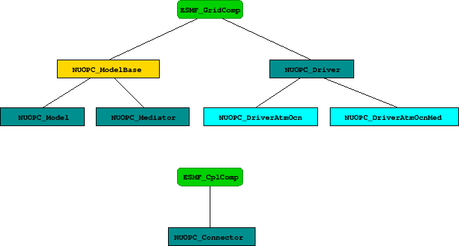

The NUOPC Layer is implemented in Fortran on top of the public ESMF Fortran API.
The NUOPC utility routines form a very straight forward Fortran API, accessible through the NUOPC Fortran module. The interfaces only use native Fortran types and public ESMF derived types. In order to access the utility API of the NUOPC Layer, user code must include the following two use lines:
use ESMF use NUOPC
The NUOPC generic components are implemented as a collection of Fortran modules. Each module implements a single, well specified set of standard ESMF_GridComp or ESMF_CplComp methods. The nomenclature of the generic component modules starts with the NUOPC_ prefix and continues with the flavor: Driver, Model, Mediator, or Connector. This is optionally followed by a string of additional descriptive terms. The four flavors of generic components implemented by the NUOPC Layer are:
The user code accesses the desired generic component(s) by including a use line for each one. Each generic component defines a small set of public names that are made available to the user code through the use statement. At a minimum the SetServices method is made public. Some generic components also define a public internal state type by the standard name InternalState. It is recommended that the following syntax is used when accessing a generic component (here with internal state):
use NUOPC_DriverXYZ, only: &
DriverXYZ_SS => SetServices, &
DriverXYZ_IS => InternalState
A generic component is used by user code to implement a specialized version of the component. The user code therefore also must implement a public SetServices routine. The first thing this routine must do is call into the SetServices routine provided by the generic component. It is through this step that the specialized component inherits from the generic component.
There are three mechanisms through which user code specializes generic components.
|

|
Components that inherit from a generic component may choose to only specialize certain aspects, leaving other aspects unspecified. This allows a hierarchy of generic components to be implemented with a high degree of code re-use. The variable level of specialization supports the very differing user needs. Figure 1 depicts the inheritance structure of the NUOPC Generic Components. There are two trees, one is rooted in ESMF_GridComp, while the other is rooted in ESMF_CplComp.
The NUOPC Layer uses standard metadata on Fields to guide the decision making that is implemented in generic code. The generic NUOPC_Connector component, for instance, uses the StandardName Attribute to construct a list of matching Fields between the import and export States. The NUOPC Field Dictionary provides a software implementation of a controlled vocabulary for the StandardName Attribute. It also associates each registered StandardName with canonical Units, a default LongName, and a default ShortName.
The NUOPC Layer provides a number of default entries in the Field Dictionary, shown in the table below. The StandardName Attribute of all default entries complies with the Climate and Forecast (CF) conventions as documented at http://cf-pcmdi.llnl.gov/.
Currently it is typically that a user of the NUOPC Layer extends the Field Dictionary by calling the NUOPC_FieldDictionaryAddEntry() interface to add additional entries. It is our intention to grow the number of default entries over time, and to more strongly leverage the NUOPC Field Dictionary to ensure meta data interoperability between codes that use the NUOPC Layer.
Besides the StandardName Attribute, the NUOPC Layer currently only uses the Units entry to verify that Fields are given in their canonical units. The plan is to extend this to support unit conversion in the future. The default LongName and default ShortName associations are provided as a convenience to the implementor of NUOPC compliant components; the NUOPC Layer itself does not base any decisions on these two Attributes.
| StandardName | Units | LongName | ShortName |
| (canonical) | (default) | (default) | |
| air_pressure_at_sea_level | Pa | Air Pressure at Sea Level | pmsl |
| magnitude_of_surface_downward_stress | Pa | Magnitude of Surface Downward Stress | taum |
| precipitation_flux | kg m-2 s-1 | Precipitation Flux | prcf |
| sea_surface_height_above_sea_level | m | Sea Surface Height Above Sea Level | ssh |
| sea_surface_salinity | 1e-3 | Sea Surface Salinity | sss |
| sea_surface_temperature | K | Sea Surface Temperature | sst |
| surface_eastward_sea_water_velocity | m s-1 | Surface Eastward Sea Water Velocity | sscu |
| surface_downward_eastward_stress | Pa | Surface Downward Eastward Stress | tauu |
| surface_downward_heat_flux_in_air | W m-2 | Surface Downward Heat Flux in Air | hfns |
| surface_downward_water_flux | kg m-2 s-1 | Surface Downward Water Flux | wfns |
| surface_downward_northward_stress | Pa | Surface Downward Northward Stress | tauv |
| surface_net_downward_shortwave_flux | W m-2 | Surface Net Downward Shortwave Flux | rsns |
| surface_net_downward_longwave_flux | W m-2 | Surface Net Downward Longwave Flux | rlns |
| surface_northward_sea_water_velocity | m s-1 | Surface Northward Sea Water Velocity | sscv |
The Model Component metadata is implemented as an ESMF Attribute Package:
| Name | Definition | Controlled Vocabulary |
| Verbosity | String value controlling the verbosity of INFO messages. | high, low |
| InitializePhaseMap | List of string values, mapping the logical NUOPC initialize phases, of a specific Initialize Phase Definition (IPD) version, to the actual ESMF initialize phase number under which the entry point is registered. | IPDvXXpY=Z, where XX = two-digit revision number, e.g. 01, Y = logical NUOPC phase number, Z = actual ESMF phase number, with Y, Z > 0 and Y, Z < 10 |
| NestingGeneration | Integer value enumerating nesting level. | 0, 1, 2, ... |
| Nestling | Integer value enumerating siblings within the same generation. | 0, 1, 2, ... |
| InitializeDataComplete | String value indicating whether all initialize data dependencies have been satisfied. | false, true |
| InitializeDataProgress | String value indicating whether progress is being made resolving initialize data dependencies. | false, true |
The Connector Component metadata is implemented as an ESMF Attribute Package:
| Name | Definition | Controlled Vocabulary |
| Verbosity | String value controlling the verbosity of INFO messages. | high, low |
| InitializePhaseMap | List of string values, mapping the logical NUOPC initialize phases, of a specific Initialize Phase Definition (IPD) version, to the actual ESMF initialize phase number under which the entry point is registered. | IPDvXXpY=Z, where XX = two-digit revision number, e.g. 01, Y = logical NUOPC phase number, Z = actual ESMF phase number, with Y, Z > 0 and Y, Z < 10 |
| CplList | List of StandardNames of the connected Fields. | N/A |
The Field metadata is implemented as an ESMF Attribute Package:
| Name | Definition | Controlled Vocabulary |
| Connected | Connected status. | false, true |
| TimeStamp | Nine integer values representing ESMF Time object. | N/A |
| ProducerConnection | String value indicating connection details. | open, targeted, connected |
| ConsumerConnection | String value indicating connection details. | open, targeted, connected |
| Updated | String value indicating updated status during initialization. | false, true |
The interaction between NUOPC compliant components during the initialization process is regulated by the Initialize Phase Definition or IPD. The IPDs are versioned, with a higher version number indicating backward compatibility with all previous versions.
There are two perspectives of looking at the IPD. From the driver perspective the IPD regulates the sequence in which it must call the different phases of the Initialize() routines of its child components. To this end the generic NUOPC_Driver component implements support for IPDs up to a version specified in the API documenation.
The other angle of looking at the IPD is from the driver's child components. From this perspective the IPD assigns specific meaning to each initialize phase. The child components of a driver can be divided into two groups with respect to the meaning the IPD assigns to each initialize phase. In one group are the model, mediator, and driver components, and in the other group are the connector components. The following tables document the meaning of each initialization phase for the two different child component groups for the different IPD versions. The phases are listed in the prescribed sequence used by the driver.
| IPDv00 label | Child Group | Meaning |
| IPDv00p1 | model, mediator, driver | Advertise the import and export Fields. |
| IPDv00p1 | connector | Construct the CplList Attribute on the connector. |
| IPDv00p2 | model, mediator, driver | Realize the import and export Fields. |
| IPDv00p2 | connector | Set the Connected Attribute on each import and export Field. Precompute the RouteHandle. |
| IPDv00p3 | model, mediator, driver | Check compatibility of the Fields' Connected status. |
| IPDv00p4 | model, mediator, driver | Handle Field data initialization. Time stamp the export Fields. |
| IPDv01 label | Child Group | Meaning |
| IPDv01p1 | model, mediator, driver | Advertise the import and export Fields. |
| IPDv01p1 | connector | Construct the CplList Attribute on the connector. |
| IPDv01p2 | model, mediator, driver | unspecified |
| IPDv01p2 | connector | Set the Connected Attribute on each import and export Field. |
| IPDv01p3 | model, mediator, driver | Realize the import and export Fields. |
| IPDv01p3 | connector | Precompute the RouteHandle. |
| IPDv01p4 | model, mediator, driver | Check compatibility of the Fields' Connected status. |
| IPDv01p5 | model, mediator, driver | Handle Field data initialization. Time stamp the export Fields. |
| IPDv02 label | Child Group | Meaning |
| IPDv02p1 | model, mediator, driver | Advertise the import and export Fields. |
| IPDv02p1 | connector | Construct the CplList Attribute on the connector. |
| IPDv02p2 | model, mediator, driver | unspecified |
| IPDv02p2 | connector | Set the Connected Attribute on each import and export Field. |
| IPDv02p3 | model, mediator, driver | Realize the import and export Fields. |
| IPDv02p3 | connector | Precompute the RouteHandle. |
| IPDv02p4 | model, mediator, driver | Check compatibility of the Fields' Connected status. |
| IPDv02p5 | model, mediator, driver | Handle Field data initialization. Timestamp the export Fields. |
| A loop is entered over all those model, mediator, driver Components that use IPDv02 and have unsatisfied data dependencies, repeating the following two steps: | ||
| Run() | connector | Loop over all Connectors that connect to the Component that is currently indexed by the outer loop. |
| IPDv02p5 | model, mediator, driver | Handle Field data initialization. Time stamp the export Fields. |
| Repeate these two steps until all data dependencies have been statisfied, or a dead-lock situation is detected. | ||